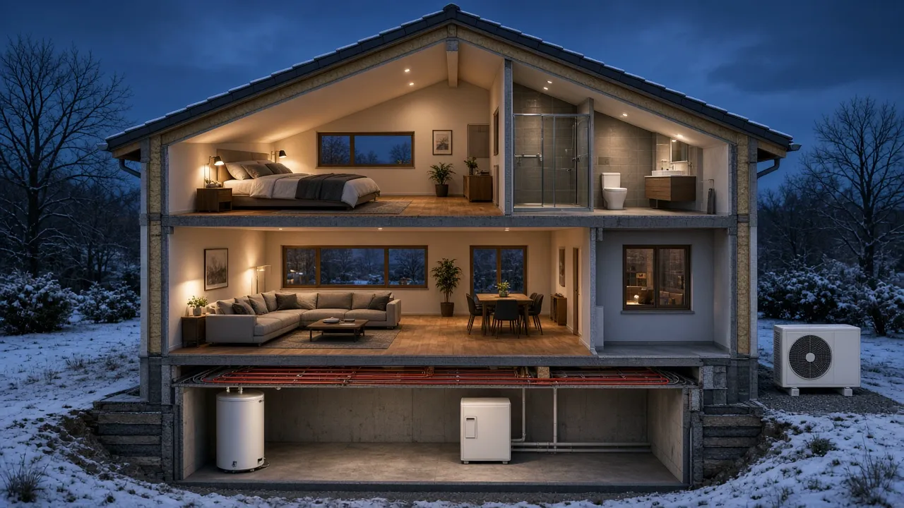
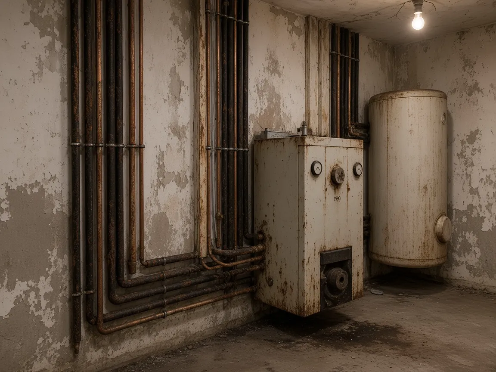
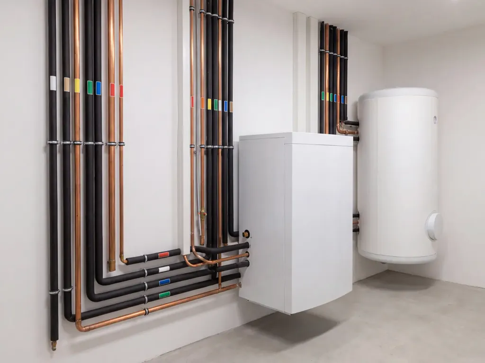

Wärme, die aus der Luft kommt.
Wir planen und bauen Wärmepumpen für Bestandshäuser in Ostwestfalen. Schieben Sie die Regler, und sehen Sie live, was in Ihrem Haus passiert.
- Außen
- −7 °C
- Vorlauf
- 35 °C
- Innen
- 21 °C
- Eingebaut seit 2009
- 600+
Ihr Haus, in Echtzeit.
Drei Regler, ein Haus, das sofort reagiert. Wärmeverluste, Vorlauf und Eignung rechnen wir als grobe Beispielwerte direkt in Ihrem Browser.
DEMO · nur erfundene Testdaten. Kein echter Auftrag oder Termin. Benannte Formularfelder können bei GET-Navigation, auch ohne JavaScript, in die URL und Hostingprotokolle gelangen. Keine echten Kontakt-, Gesundheits- oder vertraulichen Angaben. Datenschutzhinweise.
Szene 1 · GartenDraußen sammelt das Außengerät Wärme ein, auch bei Frost.
Szene 2 · FassadeEin Verdichter hebt sie auf Heiztemperatur, leise und gleichmäßig.
Szene 3 · WohnzimmerDrinnen: gleichmäßig warm, ohne Kessel, ohne Tank.
Klicken Sie sich durchs Haus.
Jeder Punkt öffnet ein Bauteil. So sehen Sie, wo welche Technik sitzt, bevor wir zum ersten Termin kommen.

Aus 1 Teil Strom werden 3 bis 4 Teile Wärme.
Eine Wärmepumpe erzeugt Wärme nicht, sie sammelt sie ein. Ein Kältemittel nimmt Umweltwärme aus der Luft auf, ein Verdichter hebt sie auf Heiztemperatur. Je milder der Tag, desto weniger Strom braucht sie dafür.
3,1Leistungszahl bei dieser Temperatur
(Beispielgerät, Vorlauf 35 °C)
Vorher / Nachher
Aus dem Öltank-Keller wird ein Technikraum.
Ziehen Sie den Regler: links ein typischer Heizraum von 1990, rechts derselbe Raum nach unserem Umbau. Tank raus, Platz gewonnen, Rohre sauber gedämmt.
- Platzbedarf im Kellerrund ein Drittel
- Brennstofflieferungentfällt
- Schornsteinfeger-Termineentfallen


Vom Check bis zum Kundendienst.
Ein Ansprechpartner für alles. Fahren Sie über die Zeilen, um uns bei der Arbeit zu sehen.
- 01
Beratung & Heizlast
Raumweise Heizlastberechnung statt Daumenregel, damit das Gerät nicht zu groß wird.
- 02
Planung & Förderung
Geräteauswahl, Aufstellort, Schallschutz und Hilfe bei den Anträgen.
- 03
Einbau in zwei bis drei Tagen
Eigene Monteure, saubere Baustelle, Einweisung am letzten Tag.
- 04
Wartung & Kundendienst
Jährliche Wartung, Fernüberwachung auf Wunsch, samstags erreichbar.
Welche Wärmepumpe passt?
Drei Bauarten, drei Charaktere. Die Balken zeigen Effizienz und Aufwand im Verhältnis.
Holt Wärme aus der Außenluft. Die häufigste Lösung im Bestand: schnell eingebaut, wenig Platzbedarf.
- Effizienz
- gut, im Winter etwas geringer
- Aufwand
- keine Bohrung, nur Außengerät
- Geräusch
- leise Geräte, Aufstellort wichtig
- Passt zu
- den meisten Ein- und Zweifamilienhäusern
Nutzt die gleichbleibende Wärme im Erdreich über Sonden oder Kollektoren. Sehr effizient, mehr Aufwand bei der Erschließung.
- Effizienz
- sehr gut, ganzjährig stabil
- Aufwand
- Bohrung oder Flächenkollektor, Genehmigung
- Geräusch
- praktisch lautlos
- Passt zu
- großen Häusern, Neubau, hoher Heizlast
Wärmepumpe plus vorhandener Kessel für die kältesten Tage. Ein sanfter Einstieg, wenn Heizflächen noch nicht optimiert sind.
- Effizienz
- gut, Wärmepumpe übernimmt den Großteil
- Aufwand
- wie Luft-Wasser
- Geräusch
- wie Luft-Wasser
- Passt zu
- unsanierten Häusern als Zwischenschritt
In vier Schritten zur Wärmepumpe.
- 01
Online-Konfigurator
Eine Minute, erste Einschätzung.
- 02
Termin vor Ort
Heizraum, Heizflächen und Aufstellort ansehen.
- 03
Planung
Heizlastberechnung, Geräteauswahl, Anträge.
- 04
Einbau
Meist zwei bis drei Tage, mit Einweisung.
Stimmen
„Baujahr 1972, Heizkörper aus den Achtzigern. Zwei getauscht, seitdem läuft die Wärmepumpe mit 42 Grad.“
„Der Konfigurator hat uns die Angst genommen. Beim Termin ging es nur noch um Details.“
„Samstagmorgen angerufen, nachmittags war jemand da. Das ist Kundendienst.“
Beispielstimmen, frei erfunden für dieses Demo-Projekt.
Häufige Fragen.
Funktioniert eine Wärmepumpe auch im Altbau?
Meistens ja. Entscheidend ist nicht das Baujahr, sondern welche Vorlauftemperatur Ihre Heizflächen brauchen. Oft reicht es, einzelne Heizkörper zu tauschen.
Wie laut ist das Außengerät?
Moderne Geräte sind etwa so leise wie ein Kühlschrank in einigen Metern Entfernung. Den Aufstellort planen wir mit Blick auf die Nachbarn.
Was ist mit Förderung?
Für den Heizungstausch gibt es in der Regel staatliche Zuschüsse. Wir sagen Ihnen im Termin, welche Programme passen, und helfen beim Antrag.
Wie lange dauert der Einbau?
Bei einem Einfamilienhaus meist zwei bis drei Tage. Warmes Wasser gibt es in der Regel schon am Abend des zweiten Tages.
Lassen Sie uns Ihr Haus ansehen.
Wir melden uns innerhalb von zwei Werktagen und vereinbaren einen Termin vor Ort.
Ihre Konfiguration
- Wohnfläche
- 140 m²
DEMO · nur erfundene Testdaten. Kein echter Auftrag oder Termin. Benannte Formularfelder können bei GET-Navigation, auch ohne JavaScript, in die URL und Hostingprotokolle gelangen. Keine echten Kontakt-, Gesundheits- oder vertraulichen Angaben. Datenschutzhinweise.